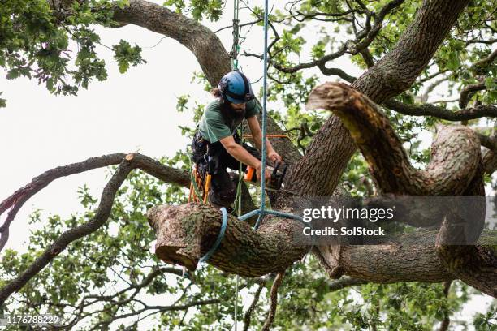

<div style="background-image: url('kk.webp'); background-size: cover; background-position: center; height: 100vh; width: 100vw; padding: 20px; display: flex; flex-direction: column; justify-content: center;">
  <div style="display: flex; flex-direction: row; align-items: center;">
    
    <div style="text-align: center;">
      <h1 style="font-size: 71px;">RELACION ENTRE TALA INMODERDA Y CAMBIO CLIMATICO</h1>
      <p style="font-size: 65px;">Los bosques actúan como sumideros de carbono, absorbiendo CO₂ de la atmósfera. La tala inmoderada reduce esta capacidad, aumentando la concentración de gases de efecto invernadero y contribuyendo al calentamiento global.</p>
    </div>
    
 <div style="position: fixed; bottom: 0; left: 0; width: 100%; display: flex; justify-content: space-between;">
  <a href="hoja4.html">
    
  </a>
  <a href="hoja6.html">
    
  </a>
<div style="position: fixed; bottom: 0; left: 50%; transform: translateX(-50%);">
  <a href="indice1.html">
    
  </a>
</div>


</div>


 </div>
</div>